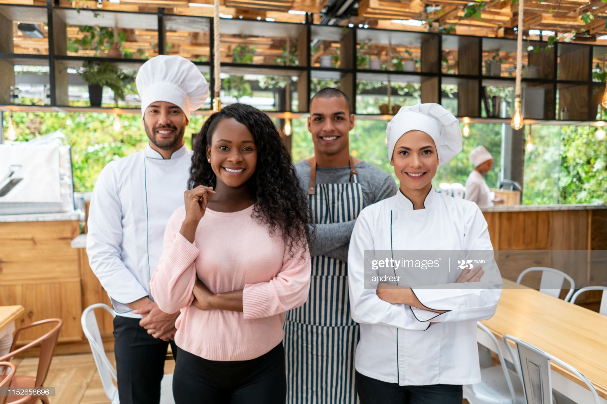

About Us
There are no short cuts when it comes to our passion. We pull out all the stops, giving you the ‘wow’ flavour, experience and consistency you not only want, but deserve. Our customers keep coming back, again, again, and again.
We’re a small but nimble family-run take out and delivery pizza shop in Okotoks, Alberta. When we’re not scouring the globe (okay, the prairies) for the freshest, ripest and boldest ingredients, we’re crafting perfect pizzas for you and your family to enjoy. From hawaiians and classic Canadians to crispy wings and decadent fudge brownies, everything at Okotoks Pizza is baked with love.
After watching his parents run a very successful pizza business in Calgary, Matt Cleveland learned how to make people happy, one topping at a time. Opening the doors to Okotoks Pizza in 2004, Matt has managed to evolve the fresh, traditional Greek-style pizza his family perfected back in the mid 80s to a more modern and convenient comfort food for todays family on the go.